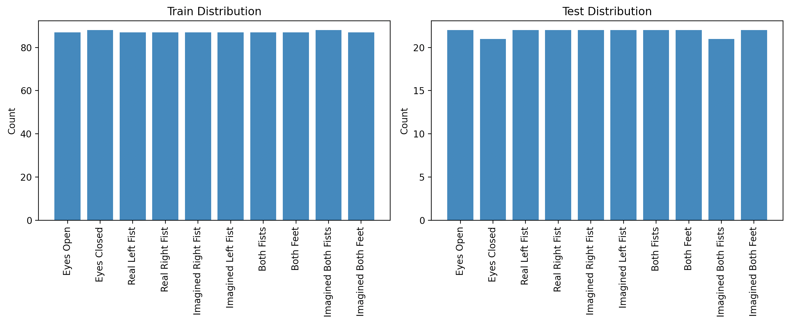
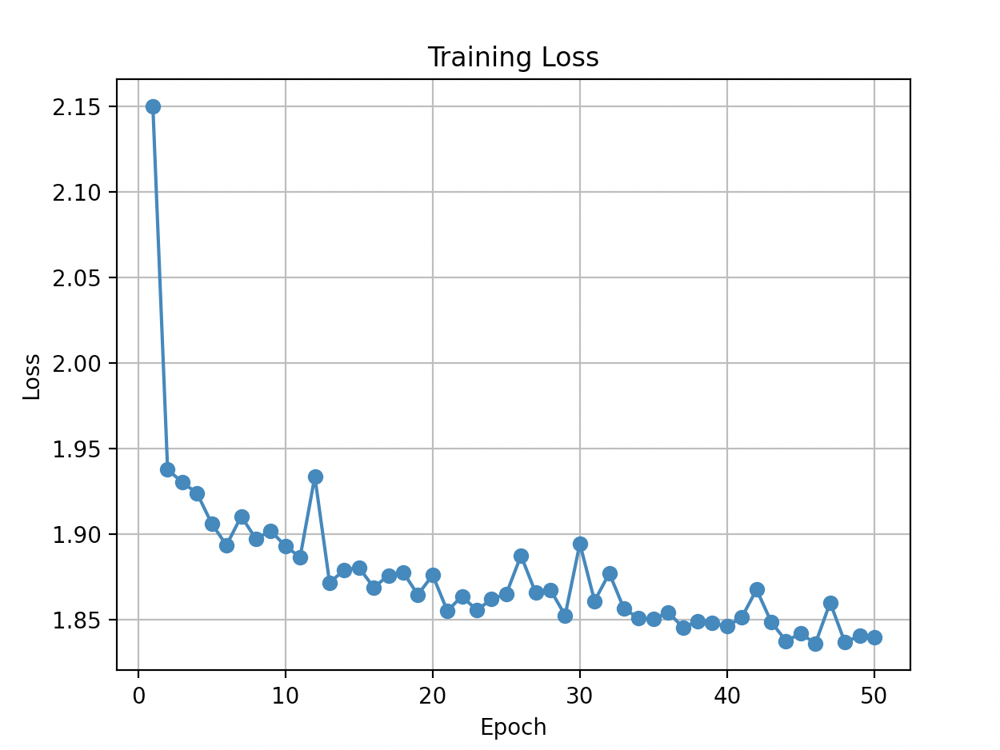
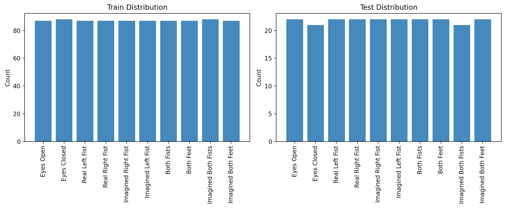
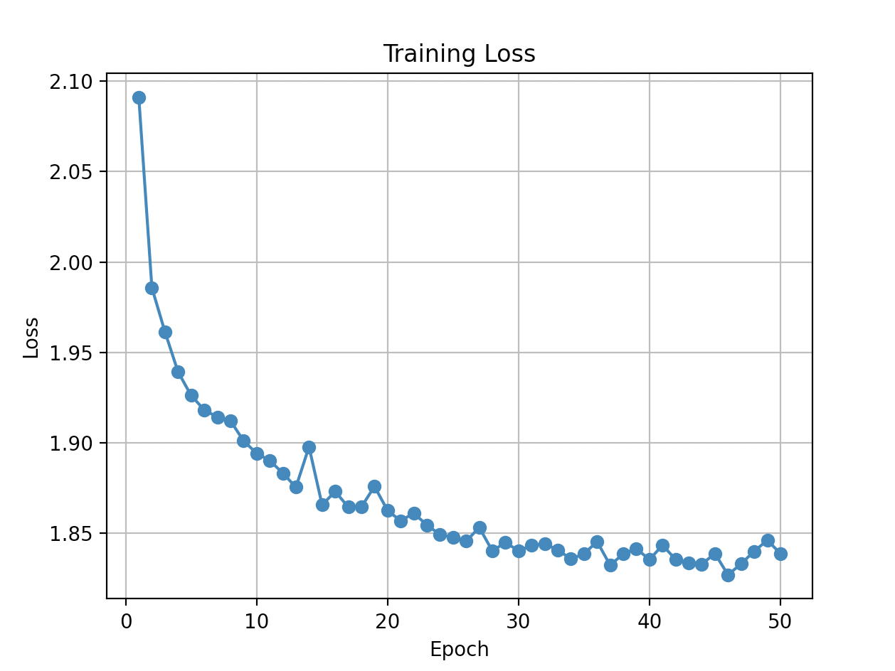

11-class classifier using precomputed average FFT feature vectors stored as .mat files instead of raw EDF time series, with a deeper 6-layer CNN and BatchNorm regularization.
No BioSig or MATLAB setup needed to run this script itself, this is pure Python with PyTorch and scipy. Unlike the other CNN scripts on this page, this one does not read .edf or .set files at all. It reads precomputed .mat feature files produced by MATLAB Script 08, referenced on the Datasets page as the EEG_CNN_Features_AvgFFT dataset. There is no baseline versus segment distinction to worry about here since the Eyes Open and Eyes Closed baselines are included among the .mat files, the same way they appear in the raw EDF dataset.
The folder_paths dictionary near the top of the script has 10 hardcoded paths pointing to one specific machine. Update each to point at the corresponding class folder inside your own copy of the avg FFT feature set.
Rather than loading full EDF time series and letting the CNN figure out frequency content, this script loads precomputed average FFT vectors saved as .mat files by MATLAB Script 08. Each avg_fft_row is a 1D vector of mean spectral amplitude across all segments for one subject class combination. This is a deliberate feature engineering choice: if the relevant information is in the frequency domain, handing the network a compact spectral summary should make training faster and more stable than processing raw signals.
# Load .mat files — each contains avg_fft_row and f vectors
for task, path in folder_paths.items():
for file in os.listdir(path):
if file.endswith(".mat"):
mat = scipy.io.loadmat(os.path.join(path, file))
if 'avg_fft_row' in mat:
fft_vec = mat['avg_fft_row'].flatten()
fft_vec = (fft_vec - np.mean(fft_vec)) / (np.std(fft_vec) + 1e-8)
raw_files.append(torch.from_numpy(fft_vec).unsqueeze(0))
# Deeper 6-layer CNN with BatchNorm and 3 pooling stages
# conv1→bn1→conv2→bn2→pool → conv3→bn3→conv4→bn4→pool → conv5→bn5→conv6→bn6→pool
# Channels: 1→16→32→64→64→128→128, then fc1(64)→dropout(0.5)→fc2(n_classes)The deeper architecture here (6 Conv1d layers vs. 2 in the baseline) is justified by the input: an average FFT vector is already a compact feature, so the network needs to learn fine grained spectral patterns rather than first discovering that frequency matters at all. BatchNorm after every conv layer stabilizes training considerably at this depth, and the 50% Dropout before the final linear layer prevents overfitting on the relatively small number of training samples per class.
The jump from 1D raw signal to 1D FFT feature as CNN input is architecturally identical — both are 1D sequences fed into Conv1d layers — but semantically the network is now doing frequency pattern recognition rather than time series pattern recognition. Comparing accuracy between Scripts 03 and 04 quantifies how much the FFT feature engineering actually helps.
Script 04 classifies the same 11 classes as Script 03, but uses precomputed average FFT vectors from MATLAB as input rather than raw EEG time series. 50 epochs, lr=0.001. Accuracy ranged from 19.27% to 22.48%, mean 20.46% — below the 9.09% chance baseline for 11 classes is not applicable here since this turned out to be the same 11-class setup as EDF with chance at 9.09%, but the mean of 20.46% still represents meaningful signal above chance. The critically important finding: the earlier single run reporting 60.23% accuracy (at 100 epochs) was an outlier — the 10-run mean at 50 epochs is 20.46%.
| Metric | Value |
|---|---|
| Best accuracy | 22.48% — Trial 7 |
| Worst accuracy | 19.27% — Trials 4 & 6 |
| Mean accuracy | 20.46% |
| Chance baseline (11 class) | 9.09% |
| Margin above chance (mean) | +11.37 pp |
| Run to run spread | Only 3.21 pp — very consistent |
| Epochs / LR | 50 / 0.001 (earlier anomalous run: 100 epochs) |




The 3.21-point spread between best and worst across 10 runs (compared to 29 points for the baseline) is not a sign of consistency — it is a sign that every run is hitting the same wall. The loss curves all plateau near epoch 20–30 and barely move afterward at 50 epochs. The earlier 60.23% run used 100 epochs, and examining that earlier loss curve shows the model barely begins improving before epoch 70. The conclusion is that this architecture requires 100–150 epochs to converge on FFT features, not 50. The 60.23% result is not an outlier due to lucky initialization — it is what this model produces when given enough training time. Retesting at 150 epochs with a fixed seed is the highest priority next step for this script.
Script 04 is undertrained at 50 epochs, not fundamentally broken. The 60.23% single result at 100 epochs is plausibly real. Retest at 150 epochs with a fixed seed before drawing conclusions about whether FFT features are useful for 11-class motor imagery.